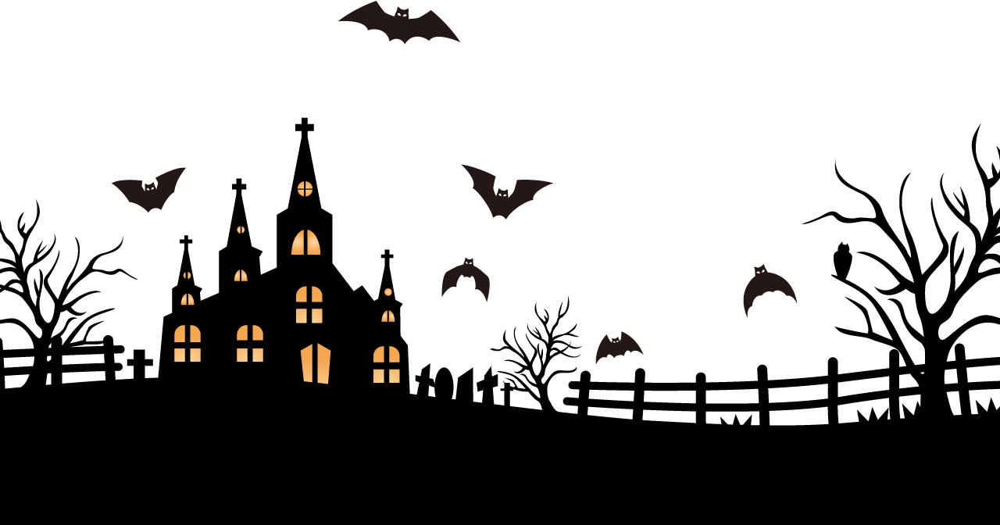

<!DOCTYPE html>
<html>
<head>
	<title></title>
	<script src="https://cdnjs.cloudflare.com/ajax/libs/parallax/3.1.0/parallax.min.js"></script>
	<style>
		body
		{
			width: 100%;
			height: 100vh;
			margin: 0;
			padding: 0;
			background-image: url(img/back.jpg);
			background-repeat: no-repeat;
			background-size: 100% 100%;
		}
		.home img
		{
			width: 110%;
		}
		.moon img
		{

			border-radius: 50%;
			box-shadow: 20px 20px 100px yellow;
			width: 40%;
			height: 40%;
			animation: rotate 6s linear infinite;
		}

		.bats img
		{
			width: 130%;
			height: 130%;
		}
		.spd{


			left: 80%;

		}
		

		@keyframes rotate
		{
			0%
			{
				transform: rotate(0deg);
			}
			100%
			{
				transform: rotate(360deg);
			}
		}
	</style>
</head>
<body>
	<div id="scene">
		<div  data-depth="0.20"></div>
		<div  data-depth="0.60"></div>
		<div  data-depth="0.100"></div>
 		<div data-depth="0.140"></div>

	<!--		<div class="s_1" data-depth="0.20"></div>
		<div class="s_1" data-depth="0.0"></div> -->

		<!-- <div data-depth="0.6">My second Layer!</div> -->
	</div>
	<script>
		var scene = document.getElementById('scene');
		var parallaxInstance = new Parallax(scene);
	</script>
</body>
</html>